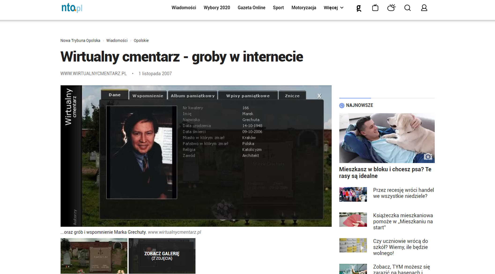
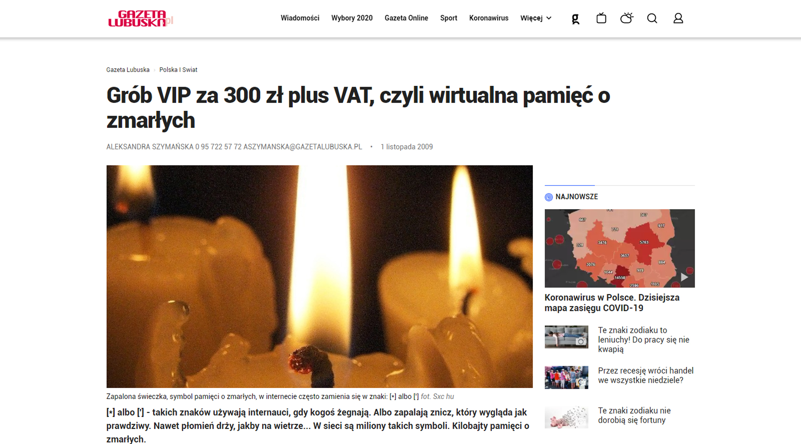

Rules
Virtual Grave 2006-2020
2007 - rp.pl
Place a monument and light a candle in the virtual cemetery ...2007 - nto.pl
 Virtual Grave - graves on the Internet2007 - info.wiara.pl
 Place a monument and light a candle in the virtual cemetery
Place a monument and light a candle in the virtual cemetery
2008 - radiomaryja.pl
 Radio Maryja - Virtual Cemeteries
Radio Maryja - Virtual Cemeteries
2009 - gazetalubuska.pl
 VIP tomb for PLN 300 plus VAT, i.e. virtual memory of the dead2011 Uniwersytet Szczeciński
Scientific work on Virtual Cemeteries2011 - nto.pl
You will plan your funeral when you lives2011 - tvp.info
Poles liked cemeteries on the Internet2012 - trojmiasto.pl
On November 1, the Virtual Cemetery is visited by up to 700,000 people.2012 - trojmiasto.pl
Virtual Cemetery will replace visits to graves2013 - onet.pl
Virtual grave - fashion or our future2015 - polskieradio.pl
Virtual Cemeteries - A new online fashion2015 - rmf24.pl
"People communicate with the dead here." We discover virtual cemeteries2015 - tvp.info
Online funeral, virtual graves. Death on the web no longer offends usNew Virtual Grave
www.wirtualnycmentarz.pl2020
Rzeczpospolita